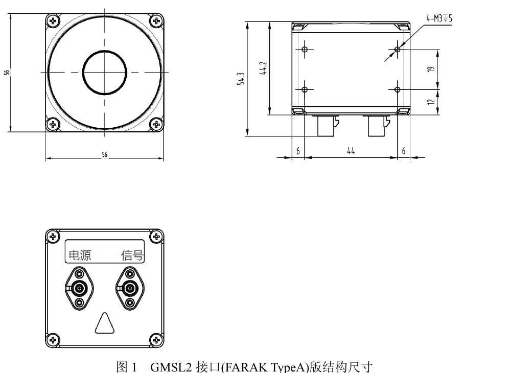

TH-MS01 / INDIRECT TIME-OF-FLIGHT
TH-MS01全固态 3D ToF 传感器
基于间接飞行时间法的全固态图像级激光雷达，集成距离探测与红外图像采集，可输出深度、红外和置信度数据。
工作模式、分辨率、测距范围、帧率、精度及视场角可按项目需求定制。下方参数为产品说明书列出的常规规格。
MECHANICAL OUTLINEGMSL2 INTERFACE

PERFORMANCE CONFIGURATIONS
两种常规规格，面向不同测量任务
具体性能随工作模式和定制配置而变化；请以实际交付型号及技术确认结果为准。
CONFIGURATION / 01近距离 · 高精度
高精度测量
适用于体积测量、机器人手抓取等近距离应用。
- 测距范围
- 0.2–5 m
- 测距精度
- 0.2–1 m：<5 mm
1–5 m：±1% depth - 单帧点云
- 1280 × 960
- 帧率
- 30 fps
- 视场角
- 100° × 75° （其他可定制）
- 盲区
- ≤20 cm
CONFIGURATION / 02中远距离
检测与识别
面向中远距离目标检测和识别任务。
- 测距范围
- 0.2–10 m
- 测距精度
- 10 mm 或 ±1% depth
- 单帧点云
- 640 × 480
- 帧率
- 10–20 fps
- 视场角
- 60° × 45°
- 盲区
- ≤20 cm
DEPTH CALIBRATION PRESETS
可选深度值标定模式
以下模式名称与频率选项依据 THViewCaliM 上位机界面整理。
MODE 22 / DP单频
单频标定
mode22_30mhz_dp30 MHzmode22_35mhz_dp35 MHzmode22_75mhz_dp75 MHzmode22_100mhz_dp100 MHzmode22_120mhz_dp120 MHzmode22_175mhz_dp175 MHzmode22_200mhz_dp200 MHz
MODE 32 / DP双频组合
双频标定
mode32_30mhz_35mhz_dp30 + 35 MHzmode32_100mhz_120mhz_dp100 + 120 MHzmode32_175mhz_200mhz_dp175 + 200 MHz
标定说明模式选择、距离设置和结果保存请在 THViewCaliM 上位机中操作。本网页仅作产品参数展示，不会连接相机或执行标定。
I/O & SYSTEM INTEGRATION
接口与数据 I/O
TH-MS01 输出深度、红外和置信度数据；主机连接可选 USB 3.0 Type-C，或按项目定制 GMSL2 接口方案。
- 数据输出
- Depth · IR · 置信度
- 主机数据接口
- USB 3.0 Type-C / GMSL2（可定制）
- GMSL2 配套
- 可定制 MIPI 转接板；提供 RK3576 GMSL2 驱动 SDK
- 供电与功耗
- 供电范围 19–24 V · 功耗 ≤8 W
- 连接器说明
- 手册列出 USB 3.0 Type-C 与 DC-026M 端子；具体功能按接口版本确认
- 驱动与系统
- Th_driver · C/C++ · Linux / Windows
- 工作温度
- −10 °C 至 60 °C
- 激光安全
- Class 1
说明书未提供 GPIO、外部触发或连接器针脚定义；实际接线请以对应接口版本的工程资料为准。规格表列出 56 × 56 × 44 mm；不同接口版本请按对应工程图确认。
EXPLORE THE DATA